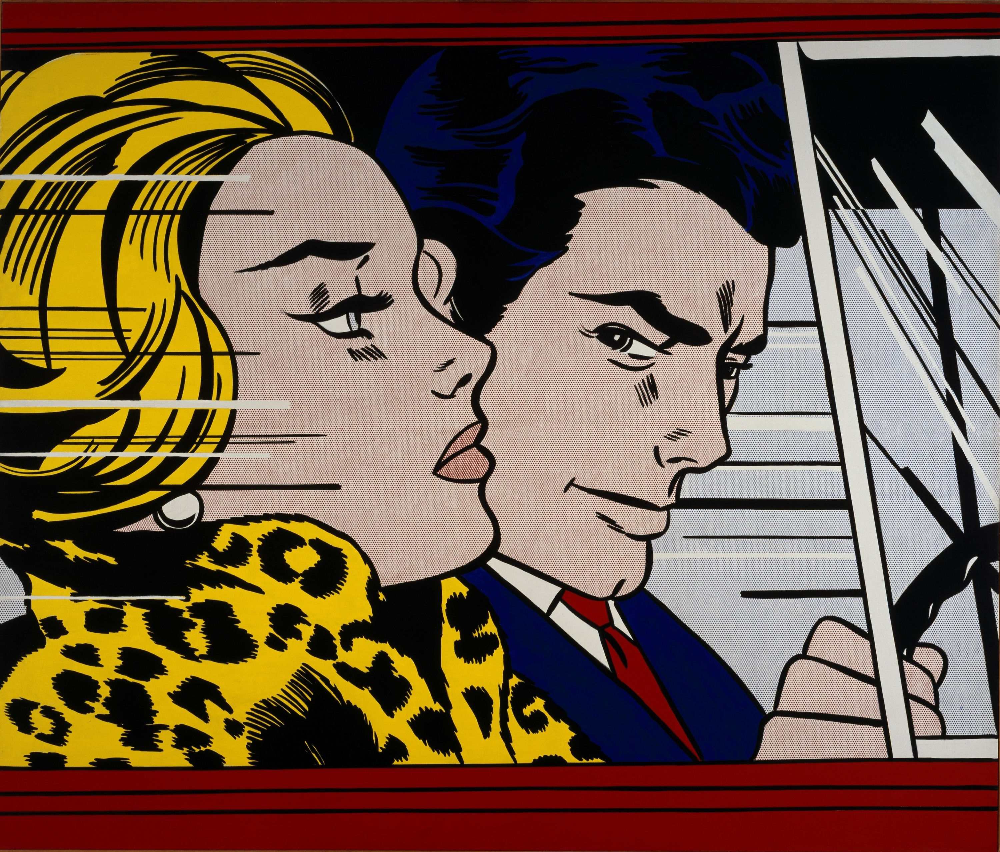

In the Car
Dimensions: 172 cm × 203.5 cm
Year: 1963
Movement: Pop Art
This particular example is one of several that is cropped so closely that the hair flows beyond the edges of the canvas.
As with most of his early romance comics, this consisted of "a boy and a girl" subject.
It is described as a tense, melodramatic graphic single-frame depiction of a romantic dialogue between a man and woman.